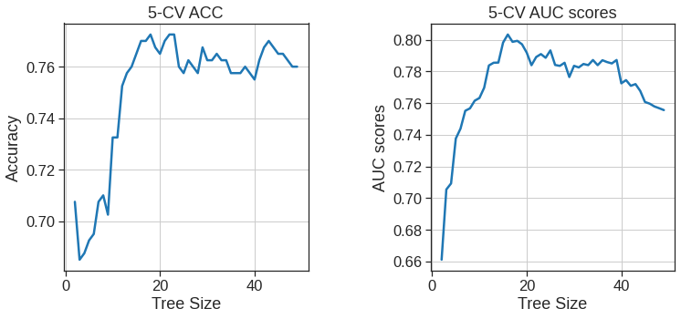
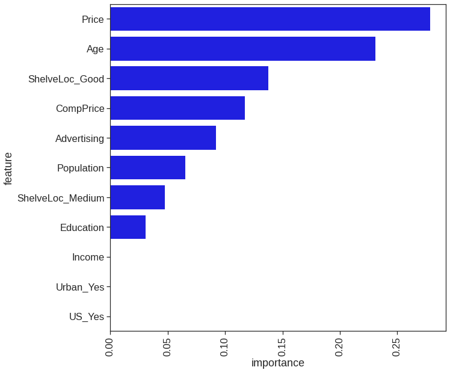
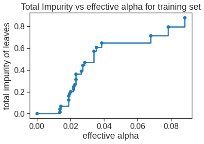
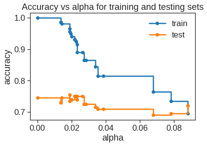

We first use classification trees to analyze the Carseats data set. In these data, Sales is a continuous variable, and so we begin by recoding it as a binary variable.
The current data we have is of an organization who sells car seats, each row represents a region. Therefore for each region, the columns are -
Sales: unit sales in thousands
CompPrice: price charged by competitor at each location
Income: community income level in 1000s of dollars
Advertising: local ad budget at each location in 1000s of dollars
Population: regional pop in thousands
Price: price for car seats at each site
ShelveLoc: Bad, Good or Medium indicates quality of shelving location
Age: age level of the population
Education: ed level at location
Urban: Yes/No
US: Yes/No
The company wants to set up a busniess in some new region, we have the information of that region and want to predict what the sales would be. To make the model we will use this data as training data source.
We create a variable, called High, which takes on a value of Yes if the Sales variable exceeds \(8\), and takes on a value of No otherwise.
from google.colab import drivedrive.mount('/content/drive')
Mounted at /content/drive
Carseats = pd.read_csv('/content/drive/MyDrive/Lab/Data/Carseats.csv')print(Carseats.shape)# Check for missing valuesassert Carseats.isnull().sum().sum() ==0# Create binary variable High 1 if Sales > 8Carseats['High'] = (Carseats['Sales'] >8).astype(np.float64)Carseats.head()
The best found split may vary across different runs, even if max_features=n_features. That is the case, if the improvement of the criterion is identical for several splits and one split has to be selected at random. To obtain a deterministic behaviour during fitting, random_state
One of the most attractive properties of trees is that they can be graphically displayed. We use the plot_tree() function to display the tree structure, and the export_text function to display the node labels. The argument feature_names instructs Python to include the feature names for any predictors, rather than simply displaying a number.
The most important indicator of Sales appears to be shelving location, since the first branch differentiates Good locations from Bad and Medium locations.
We see that the training error rate is \(6.25\%\) when we set the max_leaf_nodes to 30. In order to properly evaluate the performance of a classification tree on these data, we must estimate the test error rather than simply computing the training error. We split the observations into a training set and a test set, build the tree using the training set, and evaluate its performance on the test data. The predict() function can be used for this purpose. This approach leads to correct predictions for around \(73\,\%\) of the locations in the test data set.
Again, If you re-run the fit() function then you might get slightly different results, due to “ties”: for instance, this can happen when the training observations corresponding to a terminal node are evenly split between Yes and No response values. So remember to set the random_state
Next, we consider whether pruning the tree might lead to improved results. We use cross-validation in order to determine the optimal size of tree complexity.
The tree now consider the number of terminal nodes.
tree_sizes =range(2, 50)k =5kf5 = KFold(n_splits=k, shuffle=True, random_state=1)ACC_scores = []AUC_scores = []# 10-Fold CV for each tree size for size in tree_sizes: clf_tree = DecisionTreeClassifier(max_leaf_nodes=size, random_state=1, criterion='entropy') ACC_s = cross_val_score(clf_tree, X, y, cv=kf5, scoring='accuracy') AUC_s = cross_val_score(clf_tree, X, y, cv=kf5, scoring='roc_auc') ACC_scores.append(np.mean(ACC_s)) AUC_scores.append(np.mean(AUC_s))# plot CV-Accuracy and AUC socres w.r.t tree sizes fig, (ax1, ax2) = plt.subplots(nrows=1, ncols=2, figsize=(12, 5)) fig.subplots_adjust(wspace=0.5)ax1.plot(tree_sizes, ACC_scores)ax1.set_title('5-CV ACC')ax1.set_xlabel('Tree Size')ax1.set_ylabel('Accuracy')ax1.grid(True)ax2.plot(tree_sizes, AUC_scores)ax2.set_title('5-CV AUC scores')ax2.set_xlabel('Tree Size')ax2.set_ylabel('AUC scores')ax2.grid(True)

np.array(ACC_scores).argmax()
16
How well does this pruned tree perform on the test data set? Once again, we apply the predict() function.
Now \(74.5\,\%\) of the test observations are correctly classified, so not only has the pruning process produced a more interpretable tree, but it has also slightly improved the classification accuracy.
# Plot feature by importance in this modelplot_df = pd.DataFrame({'feature': X.columns, 'importance': clf_tree.feature_importances_})plt.figure(figsize=(10,10))sns.barplot(x='importance', y='feature', data=plot_df.sort_values('importance', ascending=False), color='b')plt.xticks(rotation=90);

cost complexity pruning can also be used in order to select a sequence of trees for consideration.
fig, ax = plt.subplots()ax.plot(ccp_alphas[:-1], impurities[:-1], marker="o", drawstyle="steps-post")ax.set_xlabel("effective alpha")ax.set_ylabel("total impurity of leaves")ax.set_title("Total Impurity vs effective alpha for training set")
Text(0.5, 1.0, 'Total Impurity vs effective alpha for training set')

clfs = []for ccp_alpha in ccp_alphas: clf = DecisionTreeClassifier(random_state=1, criterion='entropy', ccp_alpha=ccp_alpha) clf.fit(X_train, y_train) clfs.append(clf)print("Number of nodes in the last tree is: {} with ccp_alpha: {}".format( clfs[-1].tree_.node_count, ccp_alphas[-1] ))
Number of nodes in the last tree is: 1 with ccp_alpha: 0.0974240009819235
clfs = clfs[:-1]ccp_alphas = ccp_alphas[:-1]node_counts = [clf.tree_.node_count for clf in clfs]depth = [clf.tree_.max_depth for clf in clfs]fig, ax = plt.subplots(2, 1)ax[0].plot(ccp_alphas, node_counts, marker="o", drawstyle="steps-post")ax[0].set_xlabel("alpha")ax[0].set_ylabel("number of nodes")ax[0].set_title("Number of nodes vs alpha")ax[1].plot(ccp_alphas, depth, marker="o", drawstyle="steps-post")ax[1].set_xlabel("alpha")ax[1].set_ylabel("depth of tree")ax[1].set_title("Depth vs alpha")fig.tight_layout()
train_scores = [clf.score(X_train, y_train) for clf in clfs]test_scores = [clf.score(X_test, y_test) for clf in clfs]fig, ax = plt.subplots()ax.set_xlabel("alpha")ax.set_ylabel("accuracy")ax.set_title("Accuracy vs alpha for training and testing sets")ax.plot(ccp_alphas, train_scores, marker="o", label="train", drawstyle="steps-post")ax.plot(ccp_alphas, test_scores, marker="o", label="test", drawstyle="steps-post")ax.legend()plt.show()

Other metrics min_samples_leaf and max_depth can also be used to prevent a tree from overfiting
8.3 Fitting Regression Trees
Here we fit a regression tree to the Boston data set. First, we create a training set, and fit the tree to the training data.
# Load 'Boston' dataBoston = pd.read_csv('/content/drive/MyDrive/Lab/Data/Boston.csv')Boston = Boston.drop('Unnamed: 0', axis=1)Boston.info() # all numeric. no Null, Nice Boston.head()
The variable lstat measures the percentage of individuals with {lower socioeconomic status}, while the variable rm corresponds to the average number of rooms. The tree indicates that larger values of rm, or lower values of lstat, correspond to more expensive houses.
Now we use the cross validation to see whether pruning the tree will improve performance.
tree_sizes =range(2, 50)k =5kf5 = KFold(n_splits=k, shuffle=True, random_state=1)MSE_scores = []# 7-Fold CV for each tree size for size in tree_sizes: reg_tree = DecisionTreeRegressor(max_leaf_nodes=size, random_state=1) MSE_s =-cross_val_score(reg_tree, X, y, cv=kf5, scoring='neg_mean_squared_error') MSE_scores.append(np.mean(MSE_s))# plot CV-MSE as tree size gets bigger plt.plot(tree_sizes, MSE_scores)plt.title('5-CV MSE')plt.xlabel('Tree Size')plt.ylabel('MSE')plt.grid(True)print("best tree size = ", tree_sizes[np.argmin(MSE_scores)]) #np.argmin(MSE_scores)=5
In other words, the test set MSE associated with the regression tree is \(17.92\). The square root of the MSE is therefore around \(4.234\), indicating that this model leads to test predictions that are (on average) within approximately \(4,234\) of the true median home value for the census tract.
8.4 Bagging and Random Forests
Here we apply bagging and random forests to the Boston data. Recall that bagging is simply a special case of a random forest with \(m = p\). Therefore, the RandomForestRegressor() function can be used to perform both random forests and bagging. Let’s start with bagging:
# Bagging: using all featuresmax_features = X.shape[1]tree_count =100regr1 = RandomForestRegressor(max_features=max_features, random_state=2, n_estimators=tree_count)regr1.fit(X_train, y_train)
The argument max_features=12 indicates that all 12 predictors should be considered for each split of the tree – in other words, that bagging should be done. How well does this bagged model perform on the test set?
We can grow a random forest in exactly the same way, except that we’ll use a smaller value of the max_features argument. Here we’ll use max_features = 6:
# Random forests: using 6 featurestree_count =100regr2 = RandomForestRegressor(max_features=6, random_state=2, n_estimators=tree_count)regr2.fit(X_train, y_train)pred = regr2.predict(X_test)mse = mean_squared_error(y_test, pred)rmse = np.sqrt(mse)print(mse, rmse)
11.210173703557313 3.3481597488108767
The test set MSE is even lower; this indicates that random forests yielded an improvement over bagging in this case.
Using the feature_importances attribute of the RandomForestRegressor, we can view the importance of each variable:
The results indicate that across all of the trees considered in the random forest, the wealth of the community (lstat) and the house size (rm) are by far the two most important variables.
8.5 Boosting
Here we use the GradientBoostingRegressor() function, to fit boosted regression trees to the Boston data set.
We see that lstat and rm are by far the most important variables. We can also produce partial dependence plots for these two variables. These plots illustrate the marginal effect of the selected variables on the response after integrating out the other variables. In this case, as we might expect, median house prices are increasing with rm and decreasing with lstat.
/usr/local/lib/python3.7/dist-packages/sklearn/utils/deprecation.py:87: FutureWarning: Function plot_partial_dependence is deprecated; Function `plot_partial_dependence` is deprecated in 1.0 and will be removed in 1.2. Use PartialDependenceDisplay.from_estimator instead
warnings.warn(msg, category=FutureWarning)
Check https://scikit-learn.org/stable/modules/ensemble.html#adaboost for more detail
8.6 Bayesian Additive Regression Trees
In this section we use the bartpy package, and within it the SklearnModel() function, to fit a Bayesian additive regression tree model to the Boston housing data set. On colab the following code may takes 5~10 minutes to run with default value.
model = SklearnModel() # Use default parametersmodel.fit(X_train, y_train) # Fit the modelpred = model.predict(X_test)mse = mean_squared_error(y_test, pred)rmse = np.sqrt(mse)print(mse, rmse)
booster='gbtree': The booster is the base learner. It’s the machine learning model that is constructed during every round of boosting. You may have guessed that ‘gbtree’ stands for gradient boosted tree, the XGBoost default base learner. It’s uncommon but possible to work with other base learners,
objective='multi:softprob': Standard options for the objective can be viewed in the XGBoost official documentation, https://xgboost.readthedocs.io/en/latest/parameter.html, under Learning Task Parameters. The multi:softprob objective is a standard alternative to binary:logistic when the dataset includes multiple classes. It computes the probabilities of classification and chooses the highest one. If not explicitly stated, XGBoost will often find the right objective for you.
max_depth=6: The max_depth of a tree determines the number of branches each tree has. It’s one of the most important hyperparameters in making balanced predictions. XGBoost uses a default of 6, unlike random forests, which don’t provide a value unless explicitly programmed.
learning_rate=0.1: Within XGBoost, this hyperparameter is often referred to as eta. This hyperparameter limits the variance by reducing the weight of each tree to the given percentage.
n_estimators=100: Popular among ensemble methods, n_estimators is the number of boosted trees in the model. Increasing this number while decreasing learning_rate can lead to more robust results.
Without a baseline of comparison, we have no idea what that score means. Converting the target column, y, into a pandas DataFrame with the .describe() method will give the quartiles and the general statistics of the predictor column, as follows:
pd.DataFrame(y).describe()
0
count
442.000000
mean
152.133484
std
77.093005
min
25.000000
25%
87.000000
50%
140.500000
75%
211.500000
max
346.000000
A score of 63.124 is less than 1 standard deviation, a respectable result.
8.7.3 Speed comparsion
Let’s now compare GradientBoostingClassifier and XGBoostClassifier with the exoplanet dataset for its speed
# Split data into X and yX = df.iloc[:,1:]y = df.iloc[:,0]# Split data into train and test setsX_train, X_test, y_train, y_test = train_test_split(X, y, random_state=2)
Score: 0.9874213836477987
Run Time: 318.0388216972351 seconds
start = time.time()# Instantiate the XGBRegressor, xg_regxg_reg = XGBClassifier(n_estimators=100, max_depth=2, random_state=42)# class column has to start from 0 (as required since version 1.3.2).le = LabelEncoder() # https://scikit-learn.org/stable/modules/generated/sklearn.preprocessing.LabelEncoder.htmly_train = le.fit_transform(y_train)y_test = le.fit_transform(y_test)# Fit xg_reg to training setxg_reg.fit(X_train, y_train)# Predict labels of test set, y_predy_pred = xg_reg.predict(X_test)score = accuracy_score(y_pred, y_test)print('Score: '+str(score))end = time.time()elapsed = end - startprint('Run Time: '+str(elapsed) +' seconds')
Score: 0.9913522012578616
Run Time: 71.92710447311401 seconds
When it comes to big data, an algorithm five as fast can save weeks or months of computational time and resources! This advantage is huge in the world of big data. In the world of boosting, XGBoost is the model of choice due to its unparalleled speed and impressive accuracy.
8.7.4 Hyperparameter
XGBoost has many hyperparameters. XGBoost base learner hyperparameters incorporate all decision tree hyperparameters as a starting point. There are gradient boosting hyperparameters, since XGBoost is an enhanced version of gradient boosting.
# Split data into X and yX = df.iloc[:, :-1]y = df.iloc[:, -1]
Before tuning hyperparameters, let’s build a classifier so that we can obtain a baseline score as a starting point.
When fine-tuning hyperparameters, GridSearchCV and RandomizedSearchCV are the standard options. However, cross_val_score and GridSearchCV/RandomizedSearchCV do not split data the same way. One solution is to use StratifiedKFold whenever cross-validation is used.
A stratified fold includes the same percentage of target values in each fold. If a dataset contains 60% 1s and 40% 0s in the target column, each stratified test set contains 60% 1s and 40% 0s. When folds are random, it’s possible that one test set contains a 70-30 split while another contains a 50-50 split of target values.
# The 'binary:logistic' objective is standard for binary classification in determining the loss functionmodel = XGBClassifier(booster='gbtree', objective='binary:logistic', random_state=42)# Obtain scores of cross-validationscores = cross_val_score(model, X, y, cv=kfold)# Display accuracyprint('Accuracy:', np.round(scores, 2))# Display mean accuracyprint('Accuracy mean: %0.2f'% (scores.mean()))
The point here is to use the same folds to obtain new scores when fine-tuning hyperparameters with GridSearchCV and RandomizedSearchCV so that the comparison of scores is fair.
def grid_search(params, random=False): xgb = XGBClassifier(booster='gbtree', objective='binary:logistic', random_state=42) kfold = StratifiedKFold(n_splits=5, shuffle=True, random_state=42)if random: grid = RandomizedSearchCV(xgb, params, cv=kfold, n_iter=20, n_jobs=-1, random_state=42)else:# Instantiate GridSearchCV as grid_reg grid = GridSearchCV(xgb, params, cv=kfold, n_jobs=-1)# Fit grid_reg on X_train and y_train grid.fit(X, y)# Extract best params best_params = grid.best_params_# Print best paramsprint("Best params:", best_params)# Compute best score best_score = grid.best_score_# Print best scoreprint("Best score: {:.5f}".format(best_score))
The XGBoost hyperparameters presented here are not meant to be exhaustive, but they are meant to be comprehensive. For a complete list of hyperparameters, read the official documentation, XGBoost Parameters, at https://xgboost.readthedocs.io/en/latest/parameter.html.
8.7.4.1 learning_rate
learning_rate shrinks the weights of trees for each round of boosting. By lowering learning_rate, more trees are required to produce better scores. Lowering learning_rate prevents overfitting because the size of the weights carried forward is smaller.
A default value of 0.3 is used. Here is a starting range for learning_rate as placed inside our grid_search function:
Best params: {'learning_rate': 0.5}
Best score: 0.80525
lowering learning_rate may be advantageous when n_estimators goes up.
8.7.4.2 max_depth
max_depth determines the length of the tree, equivalent to the number of rounds of splitting. Limiting max_depth prevents overfitting because the individual trees can only grow as far as max_depth allows. XGBoost provides a default max_depth value of six:
grid_search(params={'max_depth':[2, 3, 5, 6, 8]})
Best params: {'max_depth': 2}
Best score: 0.79552
Changing max_depth from 6 to 2 gave a better score. The lower value for max_depth means variance has been reduced.
8.7.4.3 gamma
Known as a Lagrange multiplier, gamma provides a threshold that nodes must surpass before making further splits according to the loss function. There is no upper limit to the value of gamma. The default is 0, and anything over 10 is considered very high. Increasing gamma results in a more conservative model:
Changing gamma from 0 to 1 has resulted in a slight improvement.
8.7.4.4 min_child_weight
min_child_weight refers to the minimum sum of weights required for a node to split into a child. If the sum of the weights is less than the value of min_child_weight, no further splits are made. min_child_weight reduces overfitting by increasing its value:
Best params: {'min_child_weight': 5}
Best score: 0.81202
A slight adjustment to min_child_weight form 1 to 5 gives the best results yet.
8.7.4.5 subsample
The subsample hyperparameter limits the percentage of training instances (rows) for each boosting round. Decreasing subsample from 100% reduces overfitting:
Best params: {'subsample': 0.5}
Best score: 0.82525
The score has improved by a slight amount once again, indicating a small presence of overfitting.
8.7.4.6 colsample_bytree
Similar to subsample, colsample_bytree randomly selects particular columns according to the given percentage. colsample_bytree is useful for limiting the influence of columns and reducing variance. Note that colsample_bytree takes a percentage as input, not the number of columns:
Best params: {'colsample_bytree': 0.5}
Best score: 0.79874
You are encouraged to try colsample_bylevel and colsample_bynode on your own. colsample_bylevel randomly selects columns for each tree depth, and colsample_bynode randomly selects columns when evaluating each tree split.
8.7.4.7 n_estimators
Recall that n_estimators provides the number of trees in the ensemble. In the case of XGBoost, n_estimators is the number of trees trained on the residuals. Initialize a grid search of n_estimators with the default of 100, then double the number of trees through 800 as follows:
Best params: {'n_estimators': 200}
Best score: 0.79219
Since our dataset is small, increasing n_estimators did not produce better results.
8.7.4.8 Applying early stopping
early_stopping_rounds is not a hyperparameter, but a strategy for optimizing the n_estimators hyperparameter.
Normally when choosing hyperparameters, a test score is given after all boosting rounds are complete. To use early stopping, we need a test score after each round. eval_metric and eval_set may be used as parameters for .fit to generate test scores for each training round. eval_metric provides the scoring method, commonly ‘error’ for classification, and ‘rmse’ for regression. eval_set provides the test to be evaluated, commonly X_test and y_test.
The following steps display an evaluation metric for each round of training with the default n_estimators=100:
X_train, X_test, y_train, y_test = train_test_split(X, y, random_state=42)model = XGBClassifier(booster='gbtree', objective='binary:logistic', random_state=42)eval_set = [(X_test, y_test)]eval_metric='error'model.fit(X_train, y_train, eval_metric=eval_metric, eval_set=eval_set)# make predictions for test datay_pred = model.predict(X_test)# evaluate predictionsaccuracy = accuracy_score(y_test, y_pred)print("Accuracy: %.2f%%"% (accuracy *100.0))
/usr/local/lib/python3.7/dist-packages/xgboost/sklearn.py:797: UserWarning: `eval_metric` in `fit` method is deprecated for better compatibility with scikit-learn, use `eval_metric` in constructor or`set_params` instead.
UserWarning,
We know that StratifiedKFold cross-validation gives a mean accuracy of 78% when n_estimators=100. The disparity in scores comes from the difference in test sets.
8.7.4.9 early_stopping_rounds
early_stopping_rounds is an optional parameter to include with eval_metric and eval_set when fitting a model. Let’s try early_stopping_rounds=10. The previous code is repeated with early_stopping_rounds=10 added in:
/usr/local/lib/python3.7/dist-packages/xgboost/sklearn.py:797: UserWarning: `eval_metric` in `fit` method is deprecated for better compatibility with scikit-learn, use `eval_metric` in constructor or`set_params` instead.
UserWarning,
/usr/local/lib/python3.7/dist-packages/xgboost/sklearn.py:797: UserWarning: `early_stopping_rounds` in `fit` method is deprecated for better compatibility with scikit-learn, use `early_stopping_rounds` in constructor or`set_params` instead.
UserWarning,
A more thorough approach is to use larger values, say, n_estimators = 5000 and early_stopping_rounds=100. By setting early_stopping_rounds=100, you are guaranteed to reach the default of 100 boosted trees presented by XGBoost. Here is the code that gives a maximum of 5,000 trees and that will stop after 100 consecutive rounds fail to find any improvement:
/usr/local/lib/python3.7/dist-packages/xgboost/sklearn.py:797: UserWarning: `eval_metric` in `fit` method is deprecated for better compatibility with scikit-learn, use `eval_metric` in constructor or`set_params` instead.
UserWarning,
/usr/local/lib/python3.7/dist-packages/xgboost/sklearn.py:797: UserWarning: `early_stopping_rounds` in `fit` method is deprecated for better compatibility with scikit-learn, use `early_stopping_rounds` in constructor or`set_params` instead.
UserWarning,
# Select targetdata = pd.read_csv('melb_data.csv')y = data.Price# To keep things simple, we'll split the columns into numerical can categorical featuresmelb_predictors = data.drop(['Price', 'Date', 'Address'], axis=1)cat_col = melb_predictors.select_dtypes(exclude=['int64','float64'])# Divide data into training and validation subsetsX, X_v, y_train, y_valid = train_test_split(melb_predictors, y, train_size=0.8, test_size=0.2, random_state=0)X_train = X.select_dtypes(exclude=['object'])X_valid = X_v.select_dtypes(exclude=['object'])X_train_cat = X.select_dtypes(exclude=['int64','float64'])X_valid_cat = X_v.select_dtypes(exclude=['int64','float64'])
for col in X_train_cat.columns: X[col] = X[col].astype('category') X_v[col] = X_v[col].astype('category')
xgb = XGBRegressor(booster='gbtree', objective='reg:squarederror', random_state=42, n_jobs=-1) # You can either specify missing=-9999 or leave it as it isxgb.fit(X_train, y_train)
df = pd.read_csv('exoplanets.csv')# Split data into X and yX = df.iloc[:,1:]y = df.iloc[:,0]# Split data into train and test setsX_train, X_test, y_train, y_test = train_test_split(X, y, random_state=2)
start = time.time()# Instantiate the XGBRegressor, xg_reglg_reg = lgb.LGBMClassifier(n_estimators=100, max_depth=2, random_state=42)# Fit xg_reg to training setlg_reg.fit(X_train, y_train)# Predict labels of test set, y_predy_pred = lg_reg.predict(X_test)score = accuracy_score(y_pred, y_test)print('Score: '+str(score))end = time.time()elapsed = end - startprint('Run Time: '+str(elapsed) +' seconds')
Score: 0.9913522012578616
Run Time: 10.266663074493408 seconds
8.8.4 Hyperparameter
Following set of practices can be used to improve your model efficiency.
num_leaves : This is the main parameter to control the complexity of the tree model. Ideally, the value of num_leaves should be less than or equal to 2^(max_depth). Value more than this will result in overfitting.
min_data_in_leaf : Setting it to a large value can avoid growing too deep a tree, but may cause under-fitting. In practice, setting it to hundreds or thousands is enough for a large dataset.
max_depth : We also can use max_depth to limit the tree depth explicitly.
For Faster Speed
Use bagging by setting bagging_fraction and bagging_freq.
Use feature sub-sampling by setting feature_fraction.
Use small max_bin.
Use save_binary to speed up data loading in future learning.
For better accuracy
Use large max_bin (may be slower).
Use small learning_rate with large num_iterations
Use large num_leaves(may cause over-fitting)
Try to use categorical feature directly.
To deal with over-fitting
Use min_data_in_leaf and min_sum_hessian_in_leaf
Try lambda_l1, lambda_l2 and min_gain_to_split to regularization
df = pd.read_csv('exoplanets.csv')# Split data into X and yX = df.iloc[:,1:]y = df.iloc[:,0]# Split data into train and test setsX_train, X_test, y_train, y_test = train_test_split(X, y, random_state=2)
start = time.time()# Instantiate the XGBRegressor, xg_regca_reg = CatBoostClassifier(n_estimators=100, max_depth=2, random_state=42, logging_level ='Silent')# Fit xg_reg to training setca_reg.fit(X_train, y_train)# Predict labels of test set, y_predy_pred = ca_reg.predict(X_test)score = accuracy_score(y_pred, y_test)print('Score: '+str(score))end = time.time()elapsed = end - startprint('Run Time: '+str(elapsed) +' seconds')
Score: 0.9913522012578616
Run Time: 16.69258213043213 seconds
One of the differences between CatBoost and other gradient boosting libraries is its advanced processing of the categorical features (in fact “Cat” in the package name stands for “CATegorical”).
CatBoost deals with the categorical data quite well out-of-the-box. However, it also has a huge number of training parameters, which provide fine control over the categorical features preprocessing.
The amount of parameters related to categorical features processing in CatBoost is overwhelming. Here is a hopefully the full list:
one_hot_max_size (int) - use one-hot encoding for all categorical features with a number of different values less than or equal to the given parameter value. No complex encoding is performed for such features.
model_size_reg (float from 0 to inf) - The model size regularization coefficient. The larger the value, the smaller the model size. This regularization is needed only for models with categorical features (other models are small). Models with categorical features might weight tens of gigabytes or more if categorical features have a lot of values. If the value of the regularizer differs from zero, then the usage of categorical features or feature combinations with a lot of values has a penalty, so fewer of them are used in the resulting model. Default value is 0.5
max_ctr_complexity - The maximum number of features that can be combined. Each resulting combination consists of one or more categorical features and can optionally contain binary features in the following form: “numeric feature > value”. For regression task on CPU the default value is 4.
has_time (bool) - if true, the 1-st step of categorical features processing, permutation, is not performed. Useful when the objects in your dataset are ordered by time. For our dataset, we don’t need it. Default value is False
simple_ctr - Quantization settings for simple categorical features. combinations_ctr - Quantization settings for combinations of categorical features.
per_feature_ctr - Per-feature quantization settings for categorical features.
counter_calc_method determines whether to use validation dataset (provided through parameter eval_set of fit method) to estimate categories frequencies with Counter. By default, it is Full and the objects from validation dataset are used; Pass SkipTest value to ignore the objects from the validation set ctr_target_border_count - The maximum number of borders to use in target quantization for categorical features that need it. Default for regression task is 1.
ctr_leaf_count_limit - The maximum number of leaves with categorical features. Default value is None i.e. no limit.
store_all_simple_ctr- If the previous parameter ctr_leaf_count_limit at some point gradient boosting tree can no longer make splits by categorical features. With Default value False the limitation applies both to original categorical features and the features, that CatBoost creates by combining different features. If this parameter is set to True only the number of splits made on combination features is limited.
The three parameters simple_ctr, combinations_ctr, and per_feature_ctr are complex parameters that control the second and the third steps of categorical features processing.
# Select targetdata = pd.read_csv('melb_data.csv')y = data.Price# To keep things simple, we'll split the columns into numerical can categorical featuresmelb_predictors = data.drop(['Price', 'Date', 'Address'], axis=1)cat_col = melb_predictors.select_dtypes(exclude=['int64','float64'])# Divide data into training and validation subsetsX, X_v, y_train, y_valid = train_test_split(melb_predictors, y, train_size=0.8, test_size=0.2, random_state=0)X_train = X.select_dtypes(exclude=['object'])X_valid = X_v.select_dtypes(exclude=['object'])X_train_cat = X.select_dtypes(exclude=['int64','float64'])X_valid_cat = X_v.select_dtypes(exclude=['int64','float64'])
categorical_features_names =list(X_train_cat.columns)for col in categorical_features_names: X[col] = X.loc[:,col].fillna(value='nan') X_v[col] = X_v.loc[:,col].fillna(value='nan') X[col] = X[col].astype('category') X_v[col] = X_v[col].astype('category')
<catboost.core.CatBoostRegressor at 0x7f6006532dd0>
preds = catbr.predict(X_v)
mean_absolute_error(y_valid, preds)
164721.46472522244
The first thing we try is to make CatBoost use one-hot encoding for all our categorical features. The documentation says, that for the features for which one-hot encoding is used no other encodings are computed.
Let us try to set model size regularization coefficient to 0 - thus we allow our model to use as many categorical features and its combinations as it wants.
Note that any combination of several categorical features could be considered as a new one. Although it is not mentioned in the documentation, this parameter value has to be smaller than 15.
It is quite common to use several encodings for a categorical feature. For instance, CatBoost creates 4 different encodings for each categorical feature by default. By default, CatBoost uses several encoding techniques to encode each categorical feature.
First it uses Borders method with one target border TargetBorderCount=1 (in our example for each categorical feature we just want to see if it makes the car more expensive). The obtained float encodings are further discretized into CtrBorderCount=15 different values. Three values of Prior parameter are used to create 3 three different encodings: Prior=0/1:Prior=0.5/1:Prior=1/1
Also for each categorical feature, we create an encoding with Counter method. The number of categorical encoding value borders CtrBorderCount is also equal to 15, and only one value of Prior=0/1 is used.
<catboost.core.CatBoostRegressor at 0x7f6007ab7a10>
8.10 Voting and Stacking
Carseats = pd.read_csv('/content/drive/MyDrive/Lab/Data/Carseats.csv')print(Carseats.shape)# Check for missing valuesassert Carseats.isnull().sum().sum() ==0# Create binary variable High 1 if Sales > 8Carseats['High'] = (Carseats['Sales'] >8).astype(np.float64)predictors = Carseats.drop(["Sales","High"], axis=1).columnsX = pd.get_dummies(Carseats[predictors], drop_first=True) #sklearn does not have built-in support for categorical variable y = Carseats["High"]X_train, X_test, y_train, y_test = train_test_split(X, y, train_size=0.5, random_state=1)